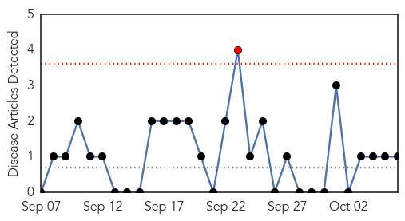
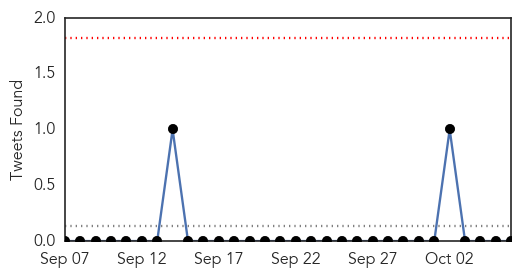
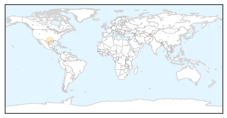
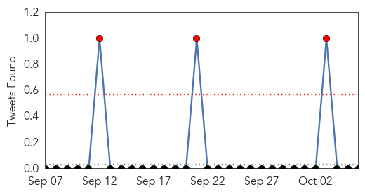

Swine Flu
30-Day Web Trend
1 alerts, 0 warnings

30-Day Twitter Trend
0 alerts, 0 warnings

Article Locations
Article Confidences

Top Articles:
Top Tweets:
-
No tweets found for Oct 06, 2014
MERS
30-Day Web Trend
0 alerts, 0 warnings

30-Day Twitter Trend
5 alerts, 0 warnings

Article Locations

Article Confidences

Top Articles:
Top Tweets:
-
No tweets found for Oct 06, 2014